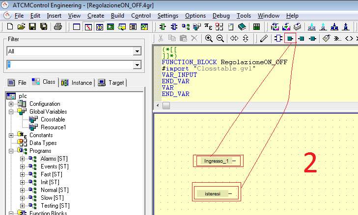
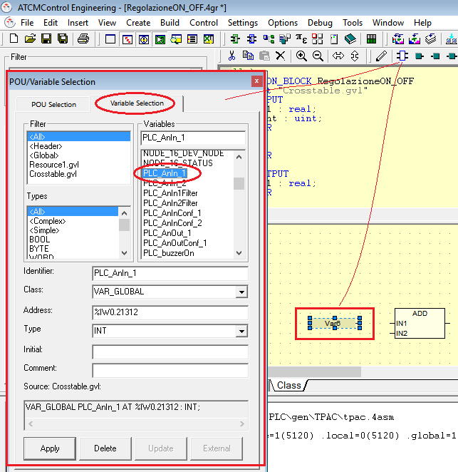

Per inserire le variabili di cui abbiamo necessità trascinare l’icona Insert Var Read nella finestra di zona 2.

Fare un doppio click sulla variabile immessa nella finestra e modificare il nome inserendo quello della variabile alla quale vogliamo associarla (ad esempio una variabile presente nella “Crosstable.gvl”) oppure selezionare la variabile appena inserita, selezionare l’icona Insert Programming Unit e fare doppio click sulla variabile che si vuole associare.
